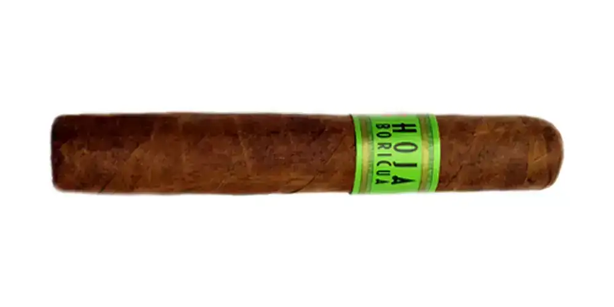

Hoja Boricua
De JFC Tobacco Corp. / Tabacalera Hoja Boricua · Mayagüez, Puerto Rico
Tripa larga 100% puertorriqueña, capote dominicano. De suave a media según la tienda; notas de especias sutiles y madera ahumada.
- Capa: Sumatra (Indonesia)
- Fortaleza: Media
- Vitolas: Corona, Robusto, Toro, Churchill
Ver Hoja Boricua en la app, califícalo y guárdalo en Mi Hoja.